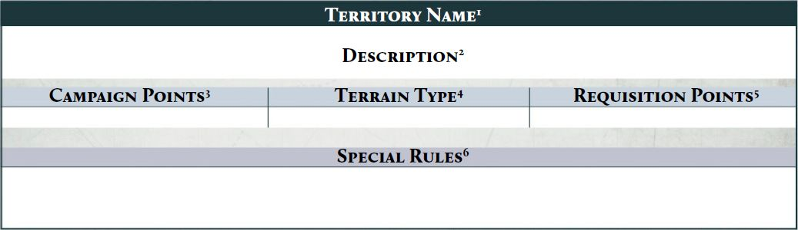

Conquest Campaigns
Conquest campaigns allow players to directly follow the consequences of each battle, using a map of the region or planet that the players are fighting over, divided into a number of territories which players can conquer and defend. Each territory within it represents a particular area of the region being fought over, awarding Campaign Points, Requisition Points and other bonuses to the player that controls it.
Campaign Map
To play a Conquest campaign, the players will need a map, made up of a number of hexes, with each hex representing a territory on that map. An example of a map made up of hexes (in this case for the Second Battle of Nyrcon City Campaign) can be found on page 128. If players are not playing that named campaign, they should create their own map using the territories found on pages 74-76, ensuring the map remains in the selected configuration for the duration of the campaign, allowing them to reference it whenever required.
Designer's Note: Building a Campaign Map
If players wish to create their own map, the recommended number of hexes should be around three hexes per player in the campaign, or four hexes per player if there are four or fewer players in the campaign. We recommend each map contains a maximum of one Hive City territory per two players, plus at least one territory chosen from the following list per player: Fortress, Spaceport, Munitorum Depot, Manufactoria Complex, Titan Forge, Militarum Aerodrome or Research Facility, with the remainder of the map being made up of Settlement, Plains, Woodlands or Industrial Wasteland hexes.
Faction Commander
Each Faction has a Faction Commander who oversees the war effort of their Faction. Each Faction Commander is appointed at the start of the campaign, though if players wish, the Faction Commander can change at the start of each Campaign Cycle.
Starting Territories
The Faction Commanders each roll a D6, re-rolling ties. The Faction Commander with the highest result can select a territory on the campaign map to start in control of, then the other Faction Commander does the same. Once the Faction Commanders have selected a territory each, the remaining players each select a territory in turn, alternating between the Factions and starting with the Faction whose Faction Commander won the roll.
No player can select a territory that has already been selected by another player and each selected territory is not required to be adjacent to another controlled by a player from the same Faction.
Any territory not controlled by a player is referred to as a neutral territory.
Conquest Campaign Sequence
The following sequence is used during each Campaign Cycle of a Conquest Campaign:
-
Determine Invaders
-
Invade Territories
-
Protect Territories
-
Determine Battles
-
Muster Armies
-
Resolve Battles
-
Capture Territories
-
Cycle End Phase
1. Determine Invaders
At the start of each Campaign Cycle, an Invader needs to be determined. During the first Campaign Cycle, each Faction Commander rolls a D6, adding 1 to the result if their Faction was the winner in the previous Campaign Cycle. Re-roll if this results in a tie. The Faction of the Faction Commander with the highest result is the Invading Faction for that Campaign Cycle and the other Faction is the Protecting Faction.
2. Invade Territories
Each player from the Invading Faction must choose a neutral territory or a territory controlled by the Protecting Faction to invade. The chosen territory must be adjacent to a territory controlled by the Invading Faction, unless instructed otherwise. Multiple players can choose to invade the same territory if they wish.
No Territories
If a Faction does not control any territories at the start of a Campaign Cycle, that Faction can fight on, representing their forces conducting a guerilla campaign to attempt to regain some territories. The campaign continues and that Faction is automatically the Invader in that Campaign Cycle.
3. Protect Territories
Each player from the Protecting Faction must choose either a neutral territory or a territory a player from the Invading Faction has chosen to invade in order to protect it. A chosen neutral territory must be adjacent to a territory controlled by the Protecting Faction.
4. Determine Battles
At this stage the Faction Commander of the Invading Faction randomly determines two missions using the table in the Legions Imperialis Rulebook, then selects one of these to be the Mission in use for this Campaign Cycle. All battles fought during this Campaign Cycle will use the same Mission. Note that if players are fighting over control of a specific territory (such as a Spaceport), this may dictate that they will play an alternative Mission instead.
If one or more players from the Invading Faction have invaded a territory that one or more players from the Protecting Faction have chosen to protect, the players in question fight a battle during this Campaign Cycle.
5. Muster Armies
Each player musters an Army, using the rules found in the Legions Imperialis Rulebook, to a points limit of 3,000 points. When declaring an Allegiance for their Army, each player must declare the Allegiance that matches their Faction (e.g., a player from the Loyalist Faction must declare their Army Allegiance to be Loyalist).
After mustering their Army, if players have any Requisition Points, they can spend any of these to add a single additional Detachment to their Army for this battle. This does not change the agreed points limit for that battle, and so cannot affect the maximum amount of points that can be spent on Strategic Asset Formations, or the number of Formations or certain Detachments that are required to be included in an Army. That player then deducts a number of Requisition Points from their total equal to the points cost of the selected Detachment.
The additional Detachment must be included as part of a Formation, and is treated as part of that Formation for the duration of this battle, but can only be used to fill Optional Detachment slots in that Formation.
For example, Andy has 250 Requisition Points available after mustering their Army. Their Army includes a Legion Demi-Company Formation with an unfilled Optional Battle Tank Detachment slot. Andy chooses to add a Legion Predator Squadron Detachment to that formation consisting of six models, fora total points cost of 210 points. As such they deduct 210 Requisition Points from their total.
6. Resolve Battles
Players fight their battles using the Mission selected in Step 4 and the Army they have mustered in Step 5. The result of the battle must be recorded and reported to the other players and the Campaign Master.
Note that in cases where a player from one faction has decided to Invade or Protect a territory and no player from the opposing Faction has chosen to Invade or Protect that territory, no battle is fought, and the player Invading or Protecting that territory is automatically victorious.
If multiple players have chosen the same territory, the resulting battle(s) can be handled in a number of ways. If there is an even number of players Invading and Protecting, then players pair off and fight battles one-on- one. If there is an uneven number of players from each Faction, then the Faction with the greater number of players can nominate a number of their players equal to the number of players from the opposing Faction, then pair these players off against players from the opposing Faction as normal. Any remaining players do not fight a battle during this Campaign Cycle, but still gain rewards based on the overall result in that territory.
The results of each battle must be recorded and reported to the other players and the Campaign Master.
7. Capture Territories
Once all battles have been resolved and the results reported, territories may change hands. If the player from the Invading Faction won the battle for a territory, or if more players from the Invading Faction won a battle than lost a battle where multiple battles were fought for the same territory, then the Invading Faction gains control of that territory. Otherwise, the player from the Protecting Faction remains in control of the territory, or gains control of it if it was a neutral territory. In the case of a tie, or an equal number of wins and losses on the Invading Faction's side, control of the territory does not change (which can result in a neutral territory remaining neutral).
When a Faction gains control of a territory, if more than one player from each Faction was Invading or Protecting that territory, the player from the victorious Faction with the fewest number of territories gains control of that territory. If two or more players have the fewest number of territories, they each roll a D6, re-rolling ties, with the winner gaining control of the territory. A player may also give control of the territory to another player from their Faction if they so choose.
A territory is said to be controlled by the player who controls it and the Faction that player is part of. Some special rules may benefit other players in a Faction if it controls certain territories.
8. Cycle End Phase
At the end of each Campaign Cycle, each territory gives the player or Faction that controls it some rewards. Players should calculate the rewards they gain from each territory they control and report this to the other players and the Campaign Master.
Firstly, each player calculates the number of Campaign Points they gain from territories they control. Each territory has a Campaign Points value indicated on its profile (see below). The player adds up the value of each territory they control and reports the total.
Secondly, each player calculates the total Requisition Points value of the territories they control, and gains that many Requisition Points.
Ending a Conquest Campaign
Once a Faction reaches 120 Campaign Points at the end of a Campaign Cycle, the campaign ends, and that Faction is the overall winner. If both Factions reach the total in the same Campaign Cycle, then the Faction with the highest number of Campaign Points is the victor. If the totals are the same, then a final battle is fought between the Faction Commanders to determine which Faction is victorious.
Designer's Note: Longer or Shorter Campaigns
If your campaign has a larger or smaller number of players, you can increase or decrease the number of Campaign Points required accordingly. We recommend a required total of 20 Campaign Points per player in the campaign (so if your campaign has eight players, a total of 160 Campaign Points would be required for victory).
TERRITORIES
The following section contains a list of territories which can be used in a Conquest campaign. A generalised example territory is shown below:

1. The name of the territory, such as Hive City or Munitorum Depot.
2. Information about the territory and what it represents.
3. The number of Campaign Points awarded to the player in control of the territory during the Cycle End Phase of a Campaign Cycle.
4. The terrain type. This provides guidance on how the battlefield should look when a battle is being fought over the territory. Terrain type is described in two ways:
- Open, Rugged or Urban: Open represents wide open areas of land with scattered hills, rocks or woodlands. Rugged represents rocky outcrops, wooded areas, swamps or other naturalistic landscapes. Urban represents cities or other man-made areas.
- Light, Medium or Dense: This represents the amount of terrain that should be used. Light means only a sporadic amount of terrain should be on the table, Medium that at least a quarter of the table should be covered by an area of terrain and Dense should have at least half of the battlefield covered in terrain.
5. This is the Requisition Points value of the territory.
6. Any special rule that affects the player and/or Faction that controls this territory.
Titan Forge
| Campaign Points | Terrain Type | Points |
|---|---|---|
| 3 | Urban (Medium) | 20 |
Special Rules
If a player controls one or more Titan Forge territories, then each time they muster an Army, the total points cost of all Detachments within Allied Contingents in an Army cannot be greater than 40% of the points limit of the Army instead of 30% as normal, as long as every Detachment in Allied Contingents is part of one or more Legion Support Formations.
Manufactoria Complex
| Campaign Points | Terrain Type | Requisition Points |
|---|---|---|
| 2 | Urban (Dense) | 20 |
Special Rules
When Protecting a Manufactoria Complex territory that they control, if a player spends Requisition Points to add a Detachment entirely composed of Vehicle or Super-heavy models to their Army, subtract 20 points from the points cost of that Detachment before spending the equivalent number of Requisition Points.
Spaceport
| Campaign Points | Terrain Type | Requisition Points |
|---|---|---|
| 4 | Urban (Medium) | 25 |
Special Rules
When a battle is fought over a Spaceport territory, do not use the previously determined Mission. Instead, play the Planetary Assault mission (see page 82). The player Protecting this territory is always the Defender in this Mission.
Industrial Wasteland
| Campaign Points | Terrain Type | Requisition Points |
|---|---|---|
| 1 | Rugged (Light) | 5 |
Special Rules
If a player controls at least one Manufactoria Complex territory and controls at least one Industrial Wasteland territory, then each Industrial Wasteland territory they control rewards 2 Campaign Points instead of the usual 1.
Militarum Aerodrome
| Campaign Points | Terrain Type | Requisition Points |
|---|---|---|
| 2 | Urban (Light) | 15 |
Special Rules
When Invading, a player that controls one or more Militarum Aerodrome territories may invade any territory on the map rather than just those adjacent to a territory their Faction controls. The exceptions to this are the Hive City and Spaceport territories - a player can only invade such territories via a Militarum Aerodrome if those territories are neutral, otherwise they must be adjacent to it to invade.
Munitorum Depot
| Campaign Points | Terrain Type | Requisition Points |
|---|---|---|
| 2 | Urban (Medium) | 20 |
Special Rules
When Protecting a Munitorum Depot territory that they control, each time a weapon with the Limited (X) weapon trait is fired by a model from that player's Army, they can roll one D6. On a result of 6, do not decrease the value of that weapon's Limited (X) weapon trait by 1.
Settlement
| Campaign Points | Terrain Type | Requisition Points |
|---|---|---|
| 2 | Urban (Medium) | 10 |
Special Rules
If a player controls two or more Settlement territories, then each Settlement territory they control awards 15 Requisition Points instead of the usual 10.
Woodlands
| Campaign Points | Terrain Type | Requisition Points |
|---|---|---|
| 1 | Rugged (Medium) | 10 |
Special Rules
If a player controls one or more Research Facilities territory and one or more Munitorum Depot territory, then each Woodlands territory they control rewards 2 Campaign Points instead of the usual 1.
Fortress
| Campaign Points | Terrain Type | Requisition Points |
|---|---|---|
| 3 | Urban (Medium) | 20 |
Special Rules
When a battle is fought over a Fortress territory, do not use the previously determined Mission. Instead, play the Strongpoint Defence mission (on page 81). The player Protecting this territory is always the Defender in such a scenario.
Hive City
| Campaign Points | Terrain Type | Requisition Points |
|---|---|---|
| 5 | Urban (Dense) | 20 |
Special Rules
When Protecting a Hive City territory that they control, after all units have been deployed, but before the start of the first round, a player can set up 3 Obstacles (1" wide, 2" long) wholly within their deployment zone.
Research Facilities
| Campaign Points | Terrain Type | Requisition Points |
|---|---|---|
| 2 | Open (Light) | 25 |
Special Rules
If a Faction controls one or more Research Facilities, then each Manufactoria Complex controlled by a player within that Faction grants an additional 20 Requisition Points.
Plains
| Campaign Points | Terrain Type | Requisition Points |
|---|---|---|
| 1 | Rugged (Light) | 15 |
Special Rules
When fighting a battle over a Plains territory, all Cavalry units increase their Movement characteristic by 1".